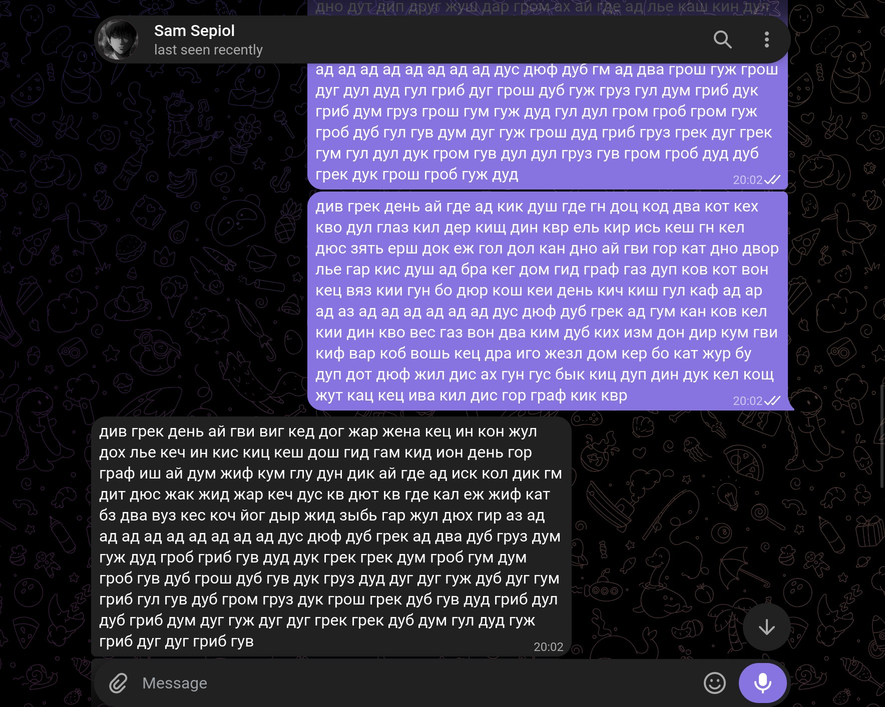
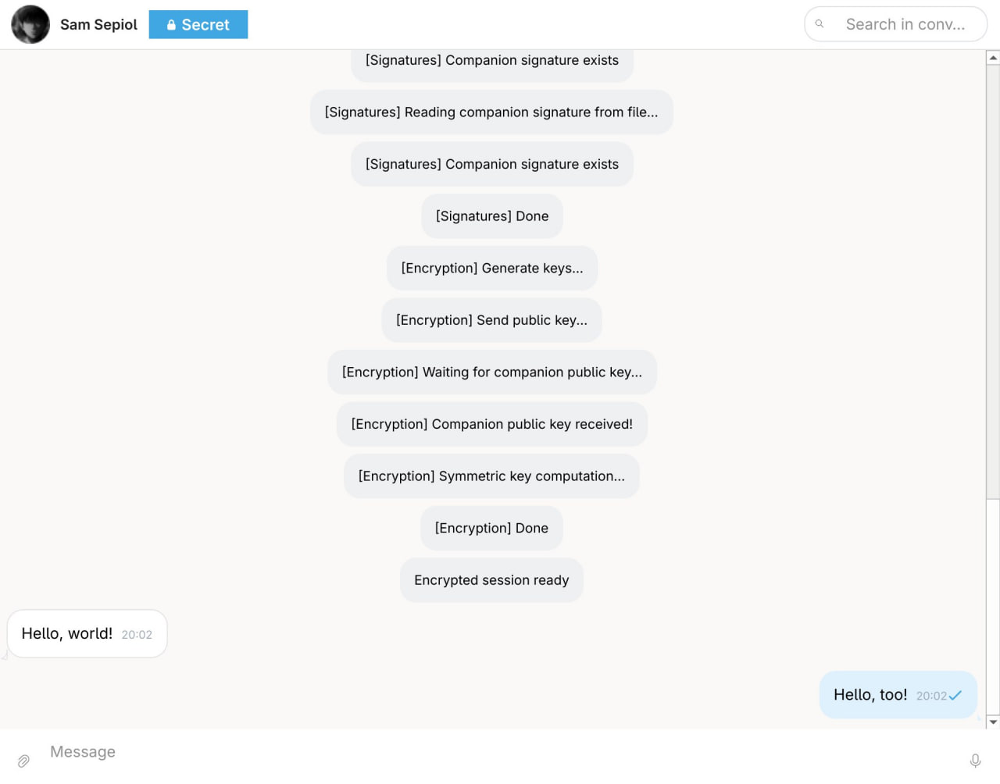
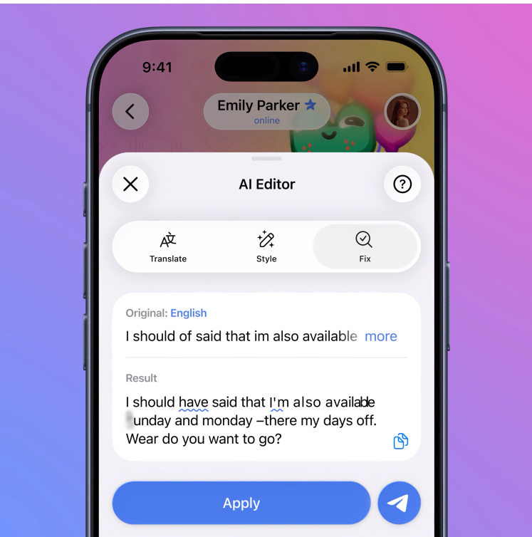

zkgram is a private Telegram client: it wraps your existing Telegram account in an independent, open‑source end‑to‑end encryption layer. Telegram still carries every message - it just never gets to read one.
The panels above are a simulation for this page. These two are not - one real Telegram client with zkgram's disguise turned on, one zkgram session log completing a real key exchange.


Designed and built by Gerätetechnik, an embedded and security engineering studio.
"If Telegram receives a valid order from the relevant judicial authorities that confirms you're a suspect in a case involving criminal activities that violate the Telegram Terms of Service, we will perform a legal analysis of the request and may disclose your IP address and phone number to the relevant authorities."
Regular Telegram chats were never end-to-end encrypted, so Telegram already holds the technical ability to read their content - that's the whole reason this project exists. What the numbers above add is that, on a valid court order, it will also hand over your phone number and IP address. zkgram does not change either of those facts about how Telegram itself is built. It changes what is actually inside the message by the time it gets anywhere near Telegram at all.
Numbers sourced from Telegram's own transparency reports, via TechCrunch, Jan 2025 and BleepingComputer
"The text editor utilizes the Cocoon Network to give users complete privacy. Requests are processed in a confidential environment with zero access to user data."

Type more than three lines in the stock Telegram app and an AI icon offers to translate it, fix your grammar, or rewrite it in a different tone. Tap it, and your drafted text - the message you haven't sent yet - leaves your device and goes to Telegram's own "Cocoon Network" for processing. The promise that nobody looks at it is made entirely by the same company that built and runs that network. Nobody outside Telegram has audited it.
This has nothing to do with zkgram sessions themselves - zkgram's own composer never goes near Telegram's AI Editor. It is what is now built into the stock app everyone else is using, for every other chat they have, encrypted or not, and it processes drafted text before a single character of any encryption gets a chance to run on it.